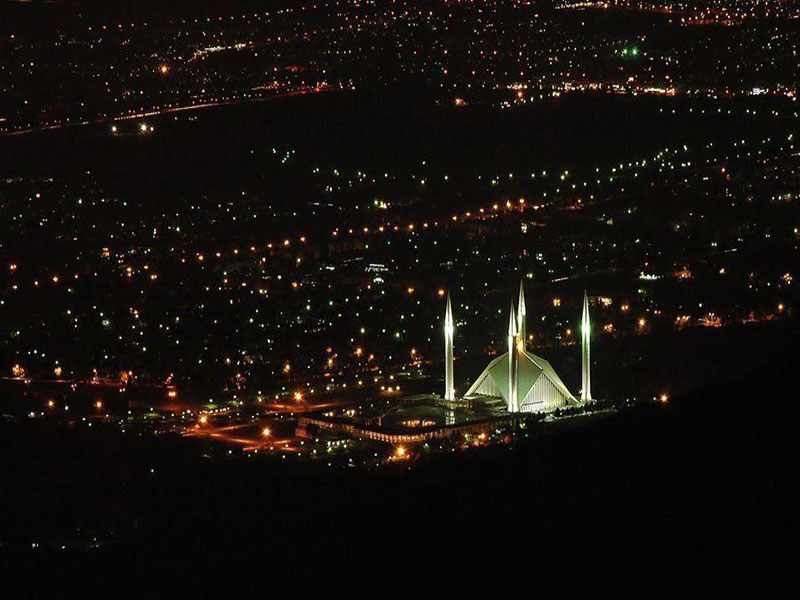

Pakistan has 6,445 cities, towns, villages, and administrative units. The country has two megacities, cities
with populations of over 10 million, and 100 cities with populations of at least 100,000.
Islamabad:

Islamabad, the capital city of Pakistan, is known for its modern architecture, lush greenery, and serene environment.
Located at the foot of the Margalla Hills, it is a planned city established in the 1960s to replace Karachi as the capital.
The city boasts wide avenues, spacious parks, and numerous landmarks like the Faisal Mosque, which is one of the largest
mosques in the world. Islamabad is also home to many government offices, embassies, and educational institutions. The blend
of natural beauty and urban development makes Islamabad a unique and vibrant place to live. It is known for its peaceful atmosphere,
safety, and high standard of living.
Airport:
Construction of the Islamabad International Airport (ICAO: OPIS) began on 7 April 2007. It was formally inaugurated on 20 April 2018 for regular international and domestic flights.
The plan to construct a new airport was announced in January 2005 by the Pakistan Civil Aviation Authority.[10] A land of 3,242 acres (1,312 ha) land
was acquired at the cost of Rs 2.5 billion in November 2005.[11]
The new airport was planned in response to increasing air traffic and passenger loads at the existing Benazir Bhutto International Airport. It was estimated that the number of passengers
at the former airport was growing by 14 percent annually compared to the national air passenger growth rate of 4 percent, making it the second-busiest airport in the country at the time.
Therefore, a site in Pind Ranjha, Attock District was selected as the site for the construction of a new airport just a few kilometres from the Islamabad interchange on M-1/M-2 motorways.
The foundation stone of the project was laid by former President Pervez Musharraf and Prime Minister Shaukat Aziz on 7 April 2007.[12]
It was a project of the Pakistan Civil Aviation Authority (PCAA) and designed by French company Aéroports de Paris Ingenierie (ADPi) and CPG Corporation of Singapore. The whole project was
financed by PCAA on its own. It is built on more than 3,200 acres of land and consists of a passenger terminal building, two runways, four taxiways, and apron and parking bays for wide-body
aircraft.[13] There is also a cargo terminal, air traffic control complex, and fuel farm, as well as a fire, crash, and rescue facility. The site of the airport is near Fateh Jang Tehsil of
Attock District. It is 25 km equidistant from Zero Point, Islamabad and from Saddar, Rawalpindi.[14] The airport is on par with international standards, and serves as a major hub for all aviation
activities in Pakistan. The PCAA asked a team of British architects to design the new airport. PCAA signed an agreement with the Louis Berger Group in the US in association with Pakistani consulting
firm GT AASR, to undertake project management services. The airport was to be completed in five years but took 12 years to complete resulting in a three times increase in cost.[citation needed]
MM Pakistan (MMP) and Mott Macdonald Ltd. were tasked to undertake the project management services from the previous consultants, and were successful in completing this troubled project.[15]
Lahore:
History:
Lahore is a city with a rich history that dates back over a thousand years. It was the second imperial capital of the Mughal Empire in 1580. The city has been influenced by many invaders and has a rich tradition of art and craft.
Lahore is the city of wonders with a rich history of over a millennium. Lahore the 2nd largest city of Pakistan and is capital of province Punjab. Lahore is referred to as cultural heart of Pakistan as it hosts most of the arts,
cuisine, festivals, music, film-making, gardening and intelligentsia of the country.
Culture:
Lahore is known as the "Cultural Heart of Pakistan" and is a center for arts, music, festivals, cuisine, and film-making. It is also a center for education, with 80% of Pakistan's books published there.
There is the history of only two cities of Pakistan.